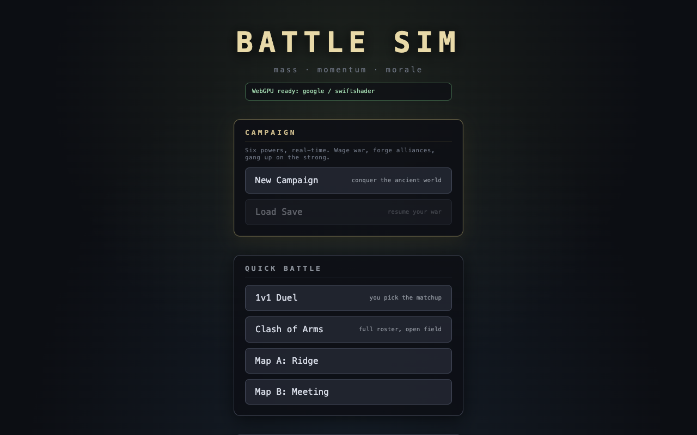
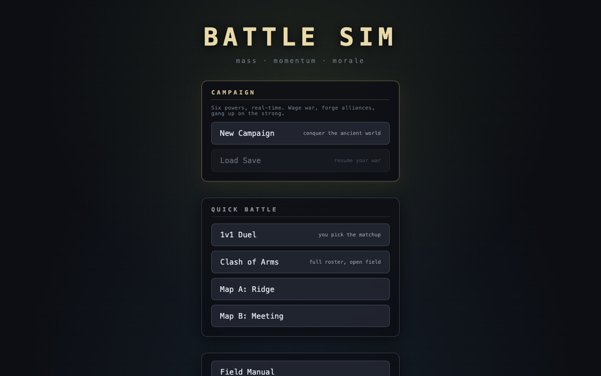

Menu Ready
menu/app shell - WebGPU-ready menu, dense controls, readable modal surface.
- WebGPU evidence
- adapter google / swiftshader; webgpu-only
- Comparison status
- equal-or-better
- Comparison note
- WebGPU menu preserves the current shell readability while adding explicit WebGPU-ready capability status.